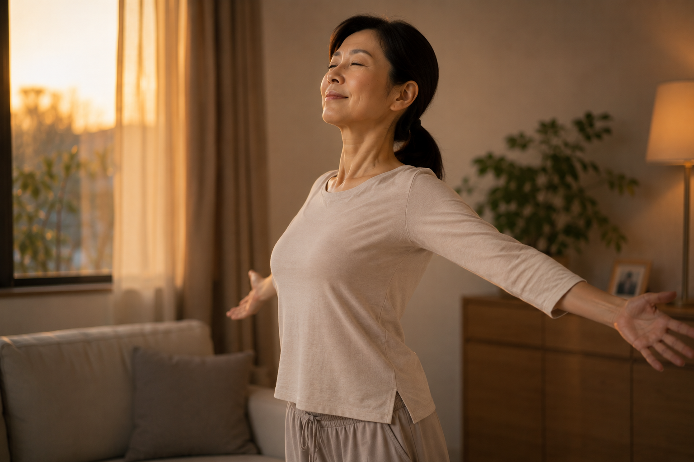

越累越睡不好？先把胸口打開：睡前放鬆與呼吸的日常整理

- 明明很累躺下卻難以放鬆，有時伴隨著白天累積的胸廓緊繃與淺快呼吸。
- 睡眠品質受壓力、作息、光線與身心狀態多重影響，體態緊繃是其中一個相關感受，並非單一病因。
- 睡前溫和開展胸口與延長吐氣，能作為身心降速的過渡儀式，但不代替失眠的醫學診斷與治療。
- 身體放鬆需要時間體察，練習以舒適不費力為原則，若有長期睡眠障礙建議尋求專業醫療評估。
明明累了一整天，眼皮重得要命，一躺下去腦子卻一直轉，翻來覆去難以放鬆。很多人會先怪自己壓力大、想太多，但有時身體也給不出放鬆的信號——白天持續前傾、含著的胸口，讓每一次吸氣與吐氣都顯得緊促短淺。
為什麼「身體很累」，躺下去卻好像停不下來？
白天長時間久坐、低頭滑手機或專注於電腦螢幕，肩膀常不知不覺往前移，胸大肌、胸小肌維持在縮短狀態，整個胸廓像被輕微束縛住。在這樣的姿勢下，肋骨周邊活動受限，呼吸往往不自覺變得淺短，多半只動用到胸廓上半段。
淺而急的呼吸常與身體應對壓力的交感神經狀態相連。當呼吸節奏降不下來，即使意識已經感到疲憊，神經系統卻仍處於「待命」模式，難以順利交棒給負責休息與修復的副交感神經。
但必須特別釐清：睡眠品質涉及自律神經、生活作息、光線、心理壓力與個人生理狀態等多重機制。不能把「睡不好」單一簡化為「只要開胸就能治好」，它反映的是身體當下的緊張感受，而非單一的病因處方。
睡前開胸與放鬆呼吸：給身體一個「降速」的過渡訊號
許多人一躺上床就急著命令自己「現在立刻睡著」，這種緊繃期待反而製造二次焦慮。溫和展開胸口、讓肋骨與橫膈膜重新擁有舒展空間，再搭配深而緩慢的吐氣，能扮演生理上的「減速踏板」，向大腦與自律神經傳遞「現在很安全，可以慢下來」的訊息。
在白天或傍晚的練習中，壁繩瑜伽能提供穩定的繩帶支撐，讓學員不用靠蠻力對抗地心引力，就能在被承托的安全感中展開胸背與腋下，避免一般徒手伸展容易出現的聳肩代償。如果你對這種練習還不熟悉，可以先看壁繩到底是什麼、第一次上課會做什麼。

今晚就能嘗試的放鬆練習：浴巾溫和開胸＋拉長吐氣
準備一條大浴巾，緊緊捲成圓柱狀（直徑約 8～10 公分，初學者不宜太厚）。平躺在床上或瑜伽墊上，將浴巾橫向墊在背後肩胛骨下緣的位置。雙手自然朝兩側展開、手心朝上，膝蓋彎曲腳掌踩地，讓下背有放鬆貼平的餘裕。
保持這個姿勢後，把注意力轉移到呼吸：用鼻子輕柔吸氣約 4 拍，感覺胸廓與肚子自然微幅浮起；隨後緩慢、延長地吐氣 6～8 拍，重點在於「吐氣比吸氣長」，重複 8 到 10 次。
練習界線提醒：這是一項日常放鬆的過渡儀式，並非治療失眠的處方，也沒有所謂「保證一兩週見效」的時間表。若躺在浴巾上感覺腰部懸空不適、胸背有壓迫刺痛，請立刻降低毛巾高度或拿掉，練習應以舒適不費力為唯一原則。
什麼情況應該尋求睡眠專科或醫療評估？
伸展與呼吸屬於生活放鬆與體態照護輔助，無法代替專業醫學診斷。依據英國國民保健署（NHS）與睡眠醫學建議，若出現以下情況，應及早諮詢神經內科、身心科或睡眠醫學門診：
- 每週出現 3 天以上入睡困難、半夜頻繁醒來或早醒，且持續超過一個月。
- 日間出現嚴重疲倦、嗜睡，已影響工作安全或日常生活專注力。
- 伴隨夜間呼吸中斷、劇烈打鼾驚醒、心悸、胸悶或下肢不寧等症狀。
正在接受失眠或自律神經相關治療者，應遵從主治醫師醫囑，勿擅自以運動取代原有醫療安排。
鑫彥瑜珈能協助的範圍與預約界線
鑫彥瑜珈位於高雄左營，主要提供壁繩瑜伽、一對一動作指導與 AI 體態檢測服務。現場 AI 體態檢測透過正面與側面照片分析白天站立時的肩線與頭部前傾角度，並由老師當面解讀，適合想了解日間站姿習慣的學員；檢測不能測量睡眠生理或診斷自律神經。若想建立規律、溫和的身體舒展習慣，可先了解本館課程方式。
想了解日間站姿與體態角度？
首次到店 NT$299，老師協助拍攝、查看姿勢角度並當面解讀。此服務針對日間站立外觀提供幾何角度對照，不能測量睡眠生理或代替醫療診斷；查看完整檢測說明。
預約首次 NT$299 AI 體態檢測若有持續或加劇的睡眠障礙、慢性失眠、夜間呼吸異常或身心不適，先尋求合格醫療專業協助。文章提供放鬆與體態衛教，不能替你診斷或保證療效。
常見問題
為什麼明明很累，躺下去卻不容易放鬆？
白天久坐含胸讓胸廓周邊處於緊繃狀態，容易伴隨淺快呼吸與交感神經待命；加上心理壓力，身體一時難以切換到副交感神經主導的休息模式。
胸口緊繃跟睡眠不好有必然的因果關係嗎？
沒有必然因果。睡眠受生活作息、心理壓力、光線、生理狀況等多重因素影響；胸口緊繃是常見的身體緊繃感受之一，不能將失眠簡化為單純姿勢問題。
睡前把胸口打開、延長吐氣有什麼幫助？
溫和開展胸廓能給橫膈膜活動餘裕，搭配拉長吐氣能向自律神經傳遞降速訊號，幫助身體建立從白天應對模式過渡到放鬆休息的緩衝儀式。
練習這個放鬆動作多久會見效？
放鬆感受因人而異，並沒有保證幾天或一兩週見效的時間表。溫和練習在於培養對身體張力的覺察，應以舒適為原則，不急於追求立即見效。
長期失眠或睡不好，做瑜伽能代替看醫生嗎？
不能。瑜伽與伸展呼吸僅屬日常放鬆與身心調適輔助。若失眠持續數週、嚴重影響日間作息，或伴隨夜間呼吸困難、心悸等，應尋求睡眠專科或相關醫療專業評估。